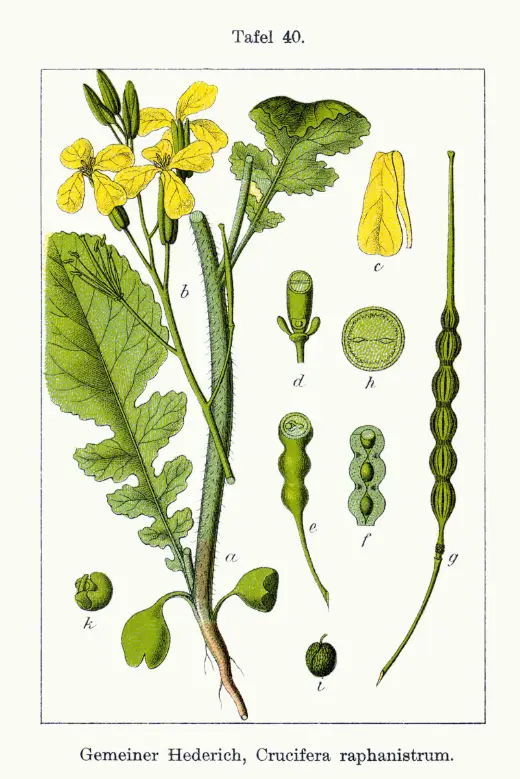

Wild radish
Wild radish is a wild green you can forage from February to May in California, Southeast and Pacific Northwest. Weedy radish with pale yellow, white or purple veined flowers and beaded pods.

When is wild radish in season in the United States?
Wild radish is usually in season February to May. Timing shifts with weather, latitude and altitude.
Where does wild radish grow in the United States?
Wild radish grows in Alabama, Arkansas, California, Florida, Georgia, Hawaii, Idaho, Kentucky, Louisiana, Mississippi, North Carolina, Oklahoma, Oregon, South Carolina, Tennessee, Texas, Virginia, Washington, West Virginia. Regions: California, Southeast, Pacific Northwest.
How do you recognise wild radish?
Weedy radish with pale yellow, white or purple veined flowers and beaded pods.
How do you harvest wild radish?
Pinch off young tips and top leaves before the plant flowers, when they are tender and mild. Leave the roots and lower leaves so it regrows. Pick away from roads, sprayed verges and dog-walking paths.
How do you eat wild radish?
Young pods, flowers and leaves raw or cooked.
How do you store wild radish?
Pickle pods.
What is wild radish good for?
Vitamin C.